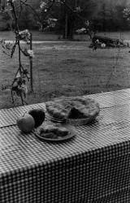

Michael Karl (Ritchie)
Sarah
for J.T.
He called himself the
turd
that came out of her uterus
and when she died, the wound
that was the earth stitched itself up.
He now had the world all to himself.
Among the million
mechanisms
swarming into the streetlamp,
among the molecular twists
of DNA at the multiplex
cresting its millions into high-tech
lip gloss on a surfboard,
among the failed friendships,
the failed marriages, the failed
press rewind but it all spools down,
as children rise from the shadows
to join the circle. Their play tastes like blood
in the schoolyard. So now,
whatever he has never
forgiven himself for stays
all that is left
of his god: singed flesh, random
acts of kindness that go nowhere.
Doctors wheel the
corpse away,
after removing the kidneys, the glands,
the bruised heart ó all tossed into a saucepan
as if thought could be found in the dissected brain ó
so how much of what is left belongs to her?
In order to remember, the dismembered past
must be beautified for the coffin. She reminds him
of all his girlfriends' multiple acts
of abandonment.
And now, reaching for
the phone
to call ó to call and think she might be on the other line
in the conch shell of her hearing aid,
in the mad birds, no matter how hard she tried
to avoid turning into the conventional
frozen ducks on a frozen pond in the fifties.
There's only so much you can do
after being beaten with a tire-iron
for thirty years.
Will she enjoy the
long decay, buried,
as she requested, in the same plot as the baby
who died, to spite
the other three she had never wanted?
She was so friendly, she might have ripped
your throat out with love.
|

(photo by Sarah Nannnemann) |
 ‚Üê Back to MarckBeggs.com | Arkansas Literary Forum archive, preserved as originally published
‚Üê Back to MarckBeggs.com | Arkansas Literary Forum archive, preserved as originally published{kind=link}